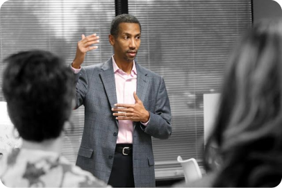

2013
Early exposure
Strategy in the Real World
Oluwadare began his professional journey in corporate strategy roles, working closely with teams in finance and operations. This phase helped him understand how structured thinking and decision-making impact real outcomes, forming the base of his leadership mindset.
